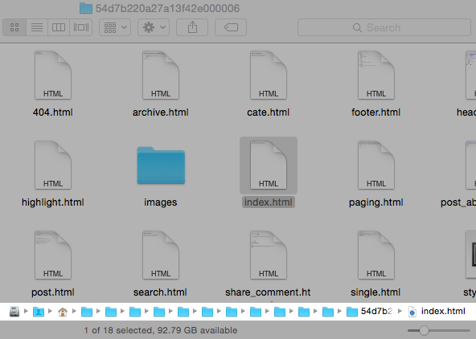
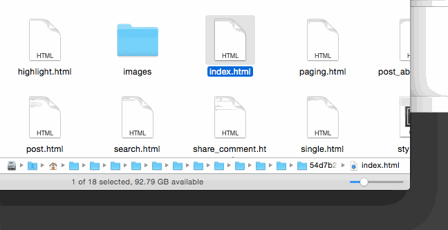

macOS 下快速输入文件路径的几种方法
无论你是科技博客撰写软件教程，还是初学编程自行编译依赖库源码，甚至是给亲戚、网友等远程指导解决电脑问题 …… 很多种情况下你需要输入文件路径(有时候真的很长的文件路径)，本文总结了 Mac OS X 下快速输入文件路径的几种方法。高手请直接路过，谢谢～

通过文件简介窗口来复制
就像 Windows 文件管理器的“属性”窗口一样，macOS 下 Finder 内点击右键菜单 - "Get Info"(⌘+I)同样会弹出文件简介窗口，在这里你可以复制文件路径。但格式是这样的：Macintosh HD ▸ Users ▸ ashfinal ▸ Downloads，如果你的读者试图复制粘贴并在 Finder 里快速跳转到该目录(⌘+⇧+G)，将会遇到“无法找到文件夹”之类的错误。但除此之外，该格式对小白/新手来说更直观好看一些～
拖动文件(夹)到终端窗口
想象下你试图编译安装某开源软件库，Finder 里面几次双击后找到README仔细阅读，发现还需要从所在目录下执行某命令。即使你在终端下一路⇥键自动补全，cd 到该路径依然是个烦人的活儿，而其实你可以直接拖动该文件夹到终端窗口，然后回车就可以啦。很简单，是吧？
万能的复制/粘贴大法
很多人知道该技巧：从 Finder 复制(⌘+C)一个或数个文件(夹)，在文本编辑框内按⌘+V粘贴可以直接输出文件名。而不用像 Windows 下那样傻乎乎的必须先点击重命名，才能把文件名复制粘贴出去。
继续上文情景，其实复制/粘贴大法同样适用于终端命令行窗口。如果下次想要 cd 到很长的文件路径下，你可以⌘+C复制后终端内直接按⌘+V试试，比刚才的拖动方法更简单！

通过 AppleScript 脚本来操作
笔者早期使用的方法，自己动手写的第一个配置脚本，为此还得意了好几天 （；￣ェ￣）
接上文情景，使用方法简单的很：终端输入fdir回车，就会直接 cd 到 Finder 当前路径。脚本内容也简单的不像话：
~/.bash_profile增加一行：
alias fdir="cd $(osascript ~/.finderdir | sed 's/ /\\ /g' | sed 's/&/\\&/g' | sed 's/(/\\(/g' | sed 's/)/\\)/g')" # sed 用来处理含有空格、&、()等特殊字符的文件名
~/finderdir文件内容：
try tell application "Finder" set annoying_path to the target of the front window as text set actual_path to POSIX path of annoying_path end tell end try
使用 ClipMenu 来处理
ClipMenu 是 macOS 下免费好用的多功能剪贴板软件，具体介绍可参见之前博文 打造属于自己的多功能剪贴板-ClipMenu 。
具体方法为：Finder 内复制文件(夹)后，快捷键⌘+⇧+V调出 ClipMenu，按住⇧键点击该条目即可粘贴为文件路径。按住⌘键还可弹出二级菜单，依情况选择Paste as File Path或Paste as HFS File Path。正常情况下第一项即可，用来 Finder 窗口内快速跳转(⌘+⇧+G)非常不错，缺点是没有对特殊字符转义，直接复制粘贴到终端命令行有时会出错。
而后者格式是这样的：Macintosh HD:Users:ashfinal:Downloads:googlechrome.dmg，对一般人来说用处不大，但如果你写 AppleScript 脚本会经常遇到。
ClipMenu 菜单依具体配置可能会有所不同，使用时请注意。
结束语
本文总结的快速输入文件路径的方法，你在使用哪种呢？欢迎补充，有什么心得或技巧一起交流分享～
文章链接：https://macplay.github.io/posts/macos-xia-kuai-su-shu-ru-wen-jian-lu-jing-de-ji-chong-fang-fa/
发布/更新于：
版权声明：如无特别说明，本站文章均遵循 CC BY-NC-SA 4.0 协议，转载请注明作者及出处。